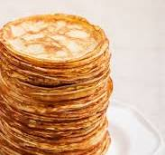

Pannkakor är en enkel och god maträtt som passar både till frukost,
lunch och efterrätt.
Ingredienser
- 2 ägg
- 3 dl mjöl
- 6 dl mjölk
- 1 nypa salt
- smör att steka i
Gör så här:
- Blanda mjöl och salt i en skål
- Vispa ner mjölken lite i taget
- Knäck i äggen och vispa till en jämn smet
- Stek pannkakorna i smör på medelvärme